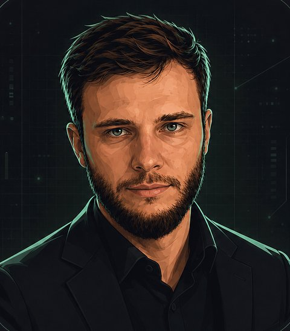

Закрытая платформа для сделок M&A. Проект заходит по приглашению, подписывает NDA и загружает данные. ИИ проверяет компанию и готовит первичный отчёт. Инвестор подписывает NDA один раз и дальше получает новые проекты без новых бумаг.
Сделки живут в Google-таблице, проверка идёт вручную. У платформы одно мерило: растёт ли число проектов, инвесторов и сделок. Если работать станет удобнее, а сделок больше не станет, задача не решена.
Вся переписка по сделке идёт через платформу. У каждой стороны свой прогресс-бар. Орхан видит обе стороны и ведёт сделку.
Инвесторов на пустую платформу не зовём. Первым собираем блок для проекта: приглашение, NDA и анкету.
Этого хватит, чтобы понять, нужна ли платформа и как она помогает в работе. Оболочка простая: сайт для компьютера и телефона, без приложений.
Первый кандидат: IT и всё рядом с ним. ЦОДы, ИИ, электронные площадки, разработка. IT-бизнес понятен, его хотят купить многие.
Проект и инвестор подписывают NDA на платформе электронно. Инвестор делает это один раз.
Инвестор изучил данные и хочет идти дальше: подписывает LOI там же. Механику уточняем.
Зелёные шаги проходят на платформе, остальные идут как обычно.
Полный due diligence делает команда инвестора, когда стороны нашли общий язык и стоп-факторов нет. В отчёте платформы прямо написано, что глубокая проверка может дать другую картину. Так расхождение с проверкой инвестора не бьёт по репутации Орхана.
Одна модель может уверенно ошибаться. Поэтому сделку разбирает комитет из нескольких моделей, и каждая проверяет выводы остальных.
Grok, Claude, Gemini и GPT обучены по-разному и разбирают выводы друг друга. Так точнее, чем у одной модели.
В каждой отрасли свои метрики. Оркестратор берёт набор промптов той отрасли, к которой относится сделка.
Российские базы подключаем по API или парсингу: владельцы, партнёры, выручка, налоговая отчётность.
Через OpenRouter сравниваем модели на задачах аналитики и берём лучшие. Бюджет на токены считаем отдельно: одной подписки не хватит.
У Стаса есть инвест-комитет из четырёх ролей: аналитик сделки, финансовый моделист, риск-менеджер и секретарь. В июне Стас показывал на конференции комитет из четырёх моделей. С этого прототипа и начинаем.
Черновой список со звонка. Его хватает для первого взгляда инвестора, но он ничего не гарантирует по документам и финансам. Остальные поля до 10–15 добираем вместе.
Платформа обрабатывает персональные данные граждан РФ. По 152-ФЗ их хранят в России, даже если платформа закрытая. Штрафы за нарушение крупные, их получали Google и Apple.
Из российского контура модели не работают из-за санкций, поэтому агенты живут на отдельном сервере. Какие данные туда можно отправлять, уточняем.
Регистрируем на reg.ru и подтверждаем личность через Госуслуги.
Готовим пользовательское соглашение и оферту до первого проекта на платформе.
Старт в России. Дальше СНГ, Азия, возможно Ближний Восток. Европу с её GDPR не берём.
По итогам созвона 26 октября.
Первичный DD, NDA с обеих сторон и LOI.
Первый блок: приглашение, NDA и анкета проекта.
Отчёт проходит перекрёстную проверку и подаётся как первичный скоринг.
Данные на сервере в РФ, зарубежный сервер только для агентов.
Венчур и pre-IPO смотрим позже.
Ответ даст кастдев Орхана на встречах с проектами и инвесторами.
IT выглядит первым кандидатом. Ещё одну-две выбираем по таблице сделок.
Есть ли у Орхана своя методика анализа сделки и подготовки предложения инвестору.
Какие шаги и документы переносим на платформу.
Какие данные уходят агентам без нарушения 152-ФЗ и NDA.
Сколько стоят токены и серверы, на кого оформляем платформу и как работаем с инвесторами из-за рубежа.
Возможно, похожая платформа уже есть. Тогда решаем, что у неё взять и стоит ли доверять ей данные проектов.
Предложение Стаса, обсуждаем на созвоне. Каждый ведёт свою часть, решения по продукту принимаем вместе. Условия партнёрства обсуждаем отдельно.

Сооснователь школы ИИ-обучения. 3+ года в ИИ, 10+ лет в IT, 5+ лет обучает команды и встраивает автоматизацию в бизнес-процессы разных компаний.
Ведёт сделки M&A: находит проекты и инвесторов через личные знакомства и конференции. С января собрал около 20 сделок.
Орхан дал себе три месяца, чтобы выбрать направление и начать разработку. Идём короткими этапами, у каждого понятный результат.
Стас присылает эту презентацию. Орхан изучает похожие платформы и обсуждает идею с инвесторами и проектами.
Разбираем отзывы рынка, выбираем отрасли беты, фиксируем поля анкеты и роли.
Прогоняем 2–3 сделки из таблицы без названий и личных данных и сверяем отчёт с тем, что Орхан знает о сделке. Так проверяем главный риск: точность.
Ещё одна точка, где можно показать идею инвесторам и проектам и собрать отзывы.
Сервер в России, приглашение проекта, NDA, анкета и отчёт ИИ-комитета. Заводим первые проекты Орхана.
Регистрация инвестора, NDA один раз, доступ к проектам и LOI.
Прозвучало на звонке, возвращаемся после беты.
Инвестор без NDA видит обезличенные карточки. Заинтересовался: регистрируется, подписывает NDA и получает первичные данные.
У этих сделок своя логика. Сначала доводим M&A.
Если бета сработает, платформу можно продавать тем, кто тоже ведёт сделки.
Напиши в Telegram, что поправить в презентации. На созвоне решаем четыре вопроса: